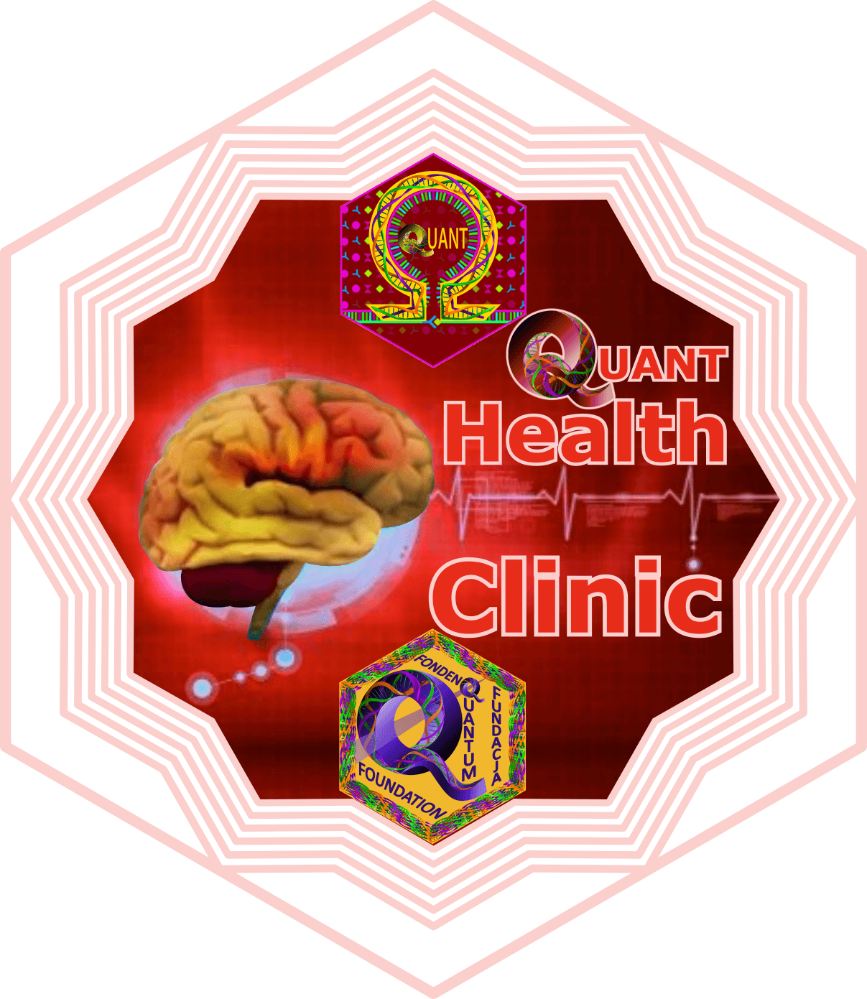
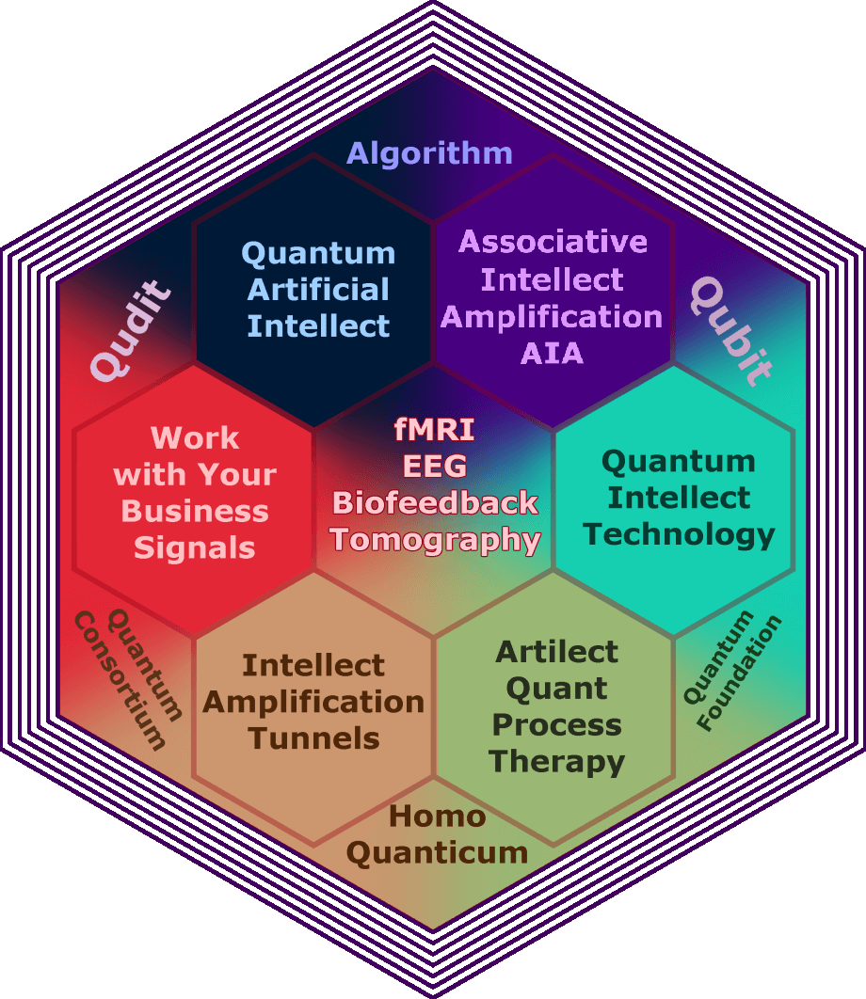

TECHNOLOGIES & TUNNELS & THERAPIES
Quantum Foundation What it is
Quantum Foundation are financial institutions that support Cosmic Artificial Mind initiatives derived from fMRI, EEG, MEG, Computer tomography, and combined fMRI/EEG, MEG/EEG and fNIRS/EEG big data together with quantum computers to build network~based consciousnessfor gifted children.
Quantum Foundation Plan
Quantum Foundation plans to raise funds to establish an internet based team to collaborate on tomographic big data from functional Magnetic Resonance Imaging fMRI, functional Near-Infrared Spectroscopy fNIRS, 3D Electroencephalography EEG and Diffusion Tensor Imaging in a international initiative to create artificial human mind. This Quantum Foundation Team will extract and select emotional differentiators that operate in international quantum internet network. Such differentiators are the words and concepts particularly favored by human physiological emotionality. These discriminants have the potential to reduce reality, as a space with infinite number of dimensions, to the spectrum of these dimensions which resonate between people’s levels of consciousness. These resonances are caused by the oscillations in the brain, heart and nervous system’s activities in the frequency range from 0 to 120 Hz [Jakob Korf 2015]. Some work in relation to modelling multidimensionallity of reality has been done in the field of M theory.
Health Clinic Quant HCQ EEG Biofeedback Krakw M.Sc. Habdank Felicja, Feliskiego 24
EEG Biofeedback Krakw M.Sc. Habdank Felicja, Feliskiego 24
 EEG Biofeedback Krakw
EEG Biofeedback Krakw
Health Clinic Quant ~ Steps to electromagnetic therapy
Health Clinic Quant presents basic steps in telebioresonance and teleneurofeedback therapy for health improvement, maintenance and prophylaxis.
Step 1 ~> A human health scan is performed to determine its physiological, electromagnetic, energetical frequencies and to define frequency lists useful to improve current health as well as to predict potential weaknesses or defects in human immunology as a way to health prophylaxis.
Step 2 ~> The frequencies obtained during the scan, as well as the resonance frequencies from previously prepared lists, found in the process of intellectual health analyses, are applied to the body using specialized generators and devices dedicated to work with specific human conditions (eg contact electrodes: gloves, socks, bands, gel pads, hand cylinders; PEMF pulsed electromagnetic coils; zappers; remote frequency applications on DNA entangled with the human body).
Step 3 ~> 3D and Hologram representations of the current and desired state of health for neural network improvement, to obtain a neural network that modulates autoimmune health reactions.
Step 4 ~> Additional support in the therapy is achieved by using supplementary methods such as herbal therapy, aromatherapy, psychotherapy (self-hypnosis, autogenic therapy).
Complex and systematic practices and therapies supported by the above steps under the experienced supervision of Telebioresonance and Teleneurofeedback Health Clinic Quant practitioners lead to positive, stable and often spectacular results.
Quantum Foundation Algorithm supporting diagram

Quantum Foundation’s support for Artilect QuanT & Cosmic Artificial Mind projects
Six step Algorithm for attainment of Homo Quanticum or Homo Quantum with special emphasis on gifted children
to be applied using fMRI/EEG, MEG/EEG, fNIRS/EEG, 3D Tomography and EEG Biofeedback treatment
Quantum Foundation ~ Quantum Artificial Intellect ~ Step 1
Quantum Foundation ~ Factom ~ Work with Your Business Signals ~ Step 2
Quantum Foundation ~ Intellect Amplification Tunnels ~ Step 3
Quantum Foundation ~ Quantum Cosmic Artilect ~> QuanT Process Therapy ~ Step 4
Quantum Foundation ~ Quantum Intellect Technology ~ Step 5
Quantum Foundation ~ Quantum International Intellect Amplification ~> Quantum IIA ~ Step 6

Quantum Foundation
Quantum Foundation ~ Quantum Artificial Intellect ~ Step 1
Quantum Foundation ~ Factom ~ Work with Your Business Signals ~ Step 2
Quantum Foundation ~ Intellect Amplification Tunnels ~ Step 3
Quantum Foundation ~ Quantum Cosmic Artilect ~> QuanT Process Therapy ~ Step 4
Quantum Foundation ~ Quantum Intellect Technology ~ Step 5
Quantum Foundation ~ Quantum International Intellect Amplification ~> Quantum IIA ~ Step 6
Quantum foundation suggests fNIRS and EEG combined device from artinis for neurofeedback.
Quantum Foundation ~ Quantum Artificial Intellect ~ Step 1
The initial step is to create Quantum Artificial Intellect.
Continuous advancements in Artificial Intelligence (AI) and deep learning technologies make it possible for computer algorithms to tackle big data tasks such as medical diagnosis based on recognition of EEG, fMRI, MEG, fNIRS, X-Ray and Computerized Tomography scans and well as data from combined systems such as fMRI/EEG, MEG/EEG and fNIRS/EEG [1, 2]. Joint effort by AI and deep learning companies and institutes to collaborate and unify the work of their software may lead to the creation of Quantum Artificial Intellect.
Telebiofeedback Artilect Teleneurofeedback Artilect
[1] Ariel Rosenfeld, et al., Big Data Analytics and AI in Mental Healthcare, March 2019
[2] Eleni I. Georga, et al., “Artificial Intelligence and Data Mining Methods for Cardiovascular Risk Prediction”, 2019
Quantum Foundation ~ Factom ~ Work with Your Business Signals ~ Step 2
The next step is to apply Quantum Artificial Intellect to business projects.
Quantum Foundation’s creates a quantum network simulation in a distributed database managed in a peer-to-peer communication model using technologies such as Ethereum or Factom’s dLoc by SMARTRAC [1, 2]. Documents and files obtained in the Quanticum Consortium projects, such as the results of fMRI EEG, MEG and PET 3D tomography, fMRI/EEG, MEG/EEG, fNIRS/EEG [3], are transmitted and processed on these networks and will be used as an analytical tool for big data and machine predictive learning. The purpose of this analysis is to detect anomalies in the area of quantum oscillations and to develop a statistical association of these anomalies for events observed in media, f.ex. social media interpreted using sentiment analysis algorithms.
Quantum Foundation ~OpenBCI project ~ EEG helmet (left) and signals of 4 major types of brain activity (right).Scanning Quantum Foundation ~Probe Microscopy
Electromagnetic Scan
Electromagnetic Scan Technology
Scanner technology is based on recording dynamic electromagnetic impulses through a change of their waveforms into nonlinear conductance. Scanning Probe Microscope (SPM), an interesting example of which is Spin polarized scanning tunneling microscopy (SPSTM), and electroencephalography (EEG) are good examples of devices where scanning technology is applied. Both of these devices work such that the dynamic electromagnetic impulses waveforms are converted into nonlinear conductance in places where measuring probe is applied: conductive tip with magnetization is modulated at 20-30 kHz in SPSTM and contact electrodes in EEG.
EEG/MEG with fMRI
Electroencephalography (EEG) and magnetoencephalography (MEG) are methods that obtain neuroimages by recording elevated electromagnetic signal changes with high density sensors from scalp potentials or magnetic fields respectively. Because of the nature of bioelectromagnetic fields, they characterize by very high submillisecond temporal resolution. At the same time suffering from low spatial resolution as the estimation of neural source is solved using the inverse problem which is ambiguous in deducing the original state of recorded data.
Functional Magnetic Resonance imaging fMRI, on the other hand, measures hemodynamic and metabolic changes in the nervous system and does is with remarkable millimeter spatial resolution. However, due to the slow response time of this measuring method, it tell more about the nature of the process rather that its localization.
Integration of these to approaches has the potential to complement each other and produce neuroimages with high spatial and temporal accuracy.
DTF technique applied to estimate the directional causality in various frequency bands among different ROIs, and the connectivity pattern visualized in a subject-specific cortex reconstructed from MRIs [Z. Liu, L. Ding et al., 2006]
Source: Zhongming Liu, Lei Ding, and Bin He, “Integration of EEG/MEG with MRI and fMRI in Functional Neuroimaging” IEEE Eng Med Biol Mag. 2006
Related: Parasuraman Padmanabhan, et al., “The Advents of Hybrid Imaging Modalities: A New Era in Neuroimaging Applications“, Neuroimaging, 2017
Quantum Foundation ~ (Left) Time resolved EEG spectrum analysis. Orthogonal cuts and height measuring tools. (Right) SPM: Interactive 3D visualization tools for nanoparticle amalgamation analysis.
3D images, holograms and hologram body
Waveforms recorded in this way are interpreted and transformed into putative 3D images, holograms and maps, which are closer to the present understanding of the nature of a given phenomenon in space-time. This transformation is done using the iterative learning method, which involves the selection of parameters at each of its steps so that the representation of the results obtained agrees with the current level of knowledge about the scanned phenomenon.
And so EEG scans serve to obtain 3D images, holograms and maps of brain processes and brain morphology, modeled on images obtained using parallel cognitive approaches such as fMRI, CAT, or computerized brain tomography. Further, using MRI the whole body can be scanned and transformed into hologram body. The algorithms for processing EEG measurements for holographic representations are created based on the repeatability of the obtained representations in regards to defined variable patterns obtained from above mentioned parallel techniques.
Quantum Foundation ~ Nervous System in quantum entanglement
Quantum Foundation ~ Synaptic Quantum Tunnelling in Brain Activity
 Quantum Foundation ~It is highly probable that the clock frequencies of 16 MHz, 75 MHz, 333 MHz and 1400 MHz are Proton-resonance-frequencies.
Quantum Foundation ~It is highly probable that the clock frequencies of 16 MHz, 75 MHz, 333 MHz and 1400 MHz are Proton-resonance-frequencies.

Quantum Tunnel Teletomography
Holographic representation of quantum and spacetime dimensions entangled through gravitoelectromagnetism, and whose correlation is available in real time during increased states of brain activity.
Scanning Tunnels Tomography
Scanning Tunnel Tomography is based on knowledge in quantum and holographic physics as well as on gravitoelectromagnetism. Based on the quantum knowledge base, we generate and simulate holographic and 3D representations that are correlated with quantum phenomena. The essence is to include quantum phenomena into certain dynamic symbols of computer holography representing the activity and morphology of the brain as well as the anatomy and morphology of the body.
Just like analogy we create images based on readings of dynamic waveforms of electromagnetic pulses during scanning. The difference is important because while in the case of electrical devices we can make a feedback loop, as in the case of biofeedback, that is, we give a negative feedback signal including the brain and we can modify the result by information about what is in the system. In quantum systems, it cannot be done because the observer’s energy strains the system, so we cannot use biofeedback in this case. We create holographic simulations and based on these holographic simulations we build parallel information on quantum states. It is not known at this stage what is the cause and what is the effect. At this stage, the concept of the flow of parallel information, the quantum dimension and its holographic analogue are created, which are not constricted, i.e. they do not burden each other, in other words they are remodeled according to the principles of quantum holographic superposition. This allows training using information from the quantum system, which will go to the results in the holographic system, which is generated simulation, just as the 3D image is compared with the mapping based on conductance readings from the electromagnetic waveforms of the brain. The essence is that the quantum phenomena are incorporated into certain holographic symbols. It may also be the opposite, so that holographic symbols can be introduced into quantum processes, e.g. by creating appropriate visualizations that can create holographic quantum reality through appropriate states, e.g. strong emotional arousal. The direction of the influence of one system on the other is not assumed, since it is not a direct influence (for example an influence on the principle of molecular interaction of electrons, etc.) as in the case of biofeedback. Instead, these flows are on the basis of entanglement, that is, the effect of transferring the state of spins from one layout to another. The possibility of interacting holographic and quantum systems is assumed and the direction of information flow is secondary.
Projects such as The Virtual Brain TVB provide tools to create simple yet realistic brain models coherent with clinical brain scanners [4].
[1]DLOC BY SMARTRAC secured by Factom
[2]dLoc: A Breakthrough Solution in Document Authentication
[3] Plant Robert,Can Blockchain Fix What Ails Electronic Medical Records?,27 Apr 2017
[4] Paula Sanz Leon, et.al., The Virtual Brain: a simulator of primate brain network dynamics Front. Neuroinform., 2013
Quantum Foundation Intellect Amplification Tunnels
[wpdevart_youtube]6Sz-l6RDrvU[/wpdevart_youtube]Quantum Foundation presents flythrough a glass brain, courtesy of Neuroscape
Quantum Foundation ~ Intellect Amplification Tunnels ~ Step 3
The next step is to connect to quantum tunnels and gravitoelectromagnetically and electromagnetically induced intellect amplification [1] and teleport as well as induce information from tunnels to projects.
We form on the one hand quantum networks, where the basic carriers are quantum teleportations and, on the other hand, holographic processes such as quantum holoportation, which are in some form an ideal space-time representation, for example, in the brain’s aspect. Then there is the balance between the ideal representation of the brain and the real phenomena that takes place in the brain.
One way to compare holographic processes with a quantum network is to compare them while the quantum process is broken. However, this completes the instance of this quantum process and its further development. It is possible, however, to introduce an intellectual quantum~predictive filters~learning simulation of a goal through epsilon non-parallel quantum processes and holographic animation [2] and the continuous ping pong as well as quantum bifurcated information exchange between them.
In practice, this is realized in such a way that we transpose these ideal models in the brain using visualizations and 3D and holographic representations with such devices as fMRI and neurofeedback (teleneurofeedback).
[1] Alexander L. Dmitriev, Gravitational Induction as Analog of Amplification of Light in Active Medium, 2017
[2] Cyber Anatomy website

Quantum Foundation Quantum Cosmic Artilect ~> QuanT GST Process Therapy
Distribution of states on the Bloch sphere as predicted by self-calibrating tomography for high noise. Taken from Braczyk et al 2012 New J. Phys. 14
Focus on Quantum Tomography
Quantum Foundation ~ Quantum Cosmic Artilect ~> QuanT GST Process Therapy ~ Step 4
the Cosmic Artificial Intellect with brain chips (BCI)
Quantum tomography is the process in which tomographically complete measurements, commonly called quorum, on the systems coming from the source are used to reconstruct quantum state (density matrix) for a source of quantum systems. The terms associated with Quantum tomography are Quantum process tomography, Quantum entanglement, Quantum information, Quantum dynamical maps, Principles of neurodynamics, Quantum neurodynamical maps.
Consciousness in the universe: A review of the Orch OR theory
Hypothesis: Microtubules, a key to Alzheimer disease
The Brain Is Both Neurocomputer and Quantum Computer
The Network Consciousness Project
Based on fully established Artificial Intellect within the existing projects, multidimentional health hologram is realized by Network Quantum Computer based on current work and results and applied as therapeutic mean through gravitoelectromagnetic and electromagnetic bioresonances GST on the cellular level as genes modifier.
Quantum Foundation ~ Quantum Intellect Technology ~ Step 5
In the next step, an information networks technology is elaborated and an infrastructure for Quantum International Intellect Amplification ~> Quantum IIA is built.
Quantum bifurcation has been studied with two approaches: indirect and direct. Indirect Quantum Bifurcation to be observed requires a quantum system and its analogical classical system where the quantum behavior is observed at the critical parameter setting determined at the moment when bifurcation occurs in the classical system. Direct Quantum Bifurcation, as proposed by [Yang and Weng 2010], is a method to study quantum bifurcation behavior in its original sense, as the change of characteristics of quantum trajectories and fixed points of nonlinear quantum dynamics.
Quantum Foundation Quantum International Intellect Amplification ~> Quantum IIA
Quantum Foundation Brain to brain (B2B) communication system overview (Grau 2014)
Quantum Foundation ~ Quantum International Intellect Amplification ~> Quantum IIA ~ Step 6
The final step is to expand, advance and maintain Quantum International Intellect Amplification (Quantum IIA). The working principle of Quantum IIA is based on the resonance between at least two parallel processes in two distinct systems such as for example cosmic empathy, that originates in mirror neurons and cosmic thought transference, which has been extensively researched by Network Consciousness Project.
Mind reading machines projects, based on ELF frequencies coupled with microwave frequencies in the proton resonance range, further support these findings.
Interfaces are made using fNIRS and EEG devices to facilitate communication directly from the brain activity necessary f.ex. for locked-in patients [1].
Virtual Brain QTVB to build and model connection between quantum and holographic dimensions with Dimensional Scaling Theory GST and Multiunit Activity Mua applied in combination with neuroimages.
Multiunit activity MUA is a method of measuring the electrophysiological responses of multiple neurons using a microelectrode system [2]. It is a key method to study human auditory response and has proven that high gamma frequency range (>70 Hz) is crucial for auditory cortical processing [3]. It also has potential to be used as predictor of seizures [4].
[1] BrainComputer InterfaceBased Communication in the Completely Locked-In State
[2] Cogan, Stuart F., “Neural Stimulation and Recording Electrodes“. Annual Review of Biomedical Engineering, 2008
[3] Rick L. Jenison, et.al, “Sparse Spectro-Temporal Receptive Fields Based on Multi-Unit and High-Gamma Responses in Human Auditory Cortex“, 2015
[4] Rozman, Peter Andrew “Multi-Unit Activity in the Human Cortex as a Predictor of Seizure Onset“, 2015
J Neurosci. 2010 Oct 13; 30(41): 1373913749.
M A Rojavin M C Ziskin, Medical application of millimetre waves, Q J Med 1998; 91:5766
IIA international vision inspired by: A. Sit, F. Bouchard, R. Fickler, J. Gagnon-Bischoff, H. Larocque, K. Heshami, D. Elser, C. Peuntinger, K. Gnthner, B. Heim, C. Marquardt, G. Leuchs, R. W. Boyd, E. Karimi. “High-Dimensional Intra-City Quantum Cryptography with Structured Photons,” Optica, Volume 4, Issue 9, 1006-1010 (2017). DOI: 10.1364/optica.4.001006
Quantum Foundation Introduction to project with special emphasis on gifted children
Collection, curation, distribution, visualization, storage and transfer of big data from brain scanning and 2D/3D mapping devices and systems such as Electroencephalography (EEG)/ functional Magnetic Resonance Imaging (fMRI), Positron Emission Tomography (PET) and 3D Nuclear Magnetic Resonance (3D NMR) are the foundation to elaborate holographic and mathematical models (quantum matrix model) of ideal human brain activities and mental states as stimulators for quantum prediction.
These 3D tomographies are stimulators in form of holographic and mathematical models (quantum matrix model). They are used in research and experiments to investigate the implications that quantum system has for the classical system. The experiments are conducted in the way to allow the quantum system to remain unloaded. Therefore, two parallel processes run in these systems, one in quantum and one in classical system and there is no online communication with information about quantum processes.

Quantum Foundation supports projects with special emphasis on gifted children

Quantum Foundation

internet Preventive Therapy iPT QuanT
internet Preventive Therapy iPT QuanT
The mission of internet Preventive Therapy QuanT is to promote latest methods of electrotherapy and quantum therapy, using achievements of researchers of brain functions, nervous system and bioelectronic systems on the cell bioresonance level as well as the state of the art equipment and computer and internet applications to apply these advances in therapeutic practice.

APEE Graphene
APEE Graphene promotes initiatives to combine the latest graphene technologies, graphene futuristic constructions and renewable energy sources to improve the quality of life and for a better future. APEE Graphene offers analytics and prediction based on big data systems as well as runs laboratory for graphene applications.
Selected applications of graphene quantum tunneling composites (ang. GQTC) are electrotribological nanogenerators constructions elements, crash sensors, pressure sensors, blood pressure sensors, gas flow sensors, wear sensors, touch sensors and switches.

Private Institute of Natural Sciences PINS
The basic premise of PINS research is to determine direct factors influencing central nervous system (CNS) and endocrine feedback system for regulation and balancing human life functions. This is done by adaptation of scientific methods such as LORETA, Electrochemical Impedance Spectroscopy and EEG Biofeedback to open and close BBT (ang. Blood Brain Tunnel).

{kind=link}
{kind=link}
{kind=link}
{kind=link}
{kind=link}
{kind=link}
{kind=link}
{kind=link}
{kind=link}
{kind=link}
{kind=link}
{kind=link}
{kind=link}
{kind=link}
{kind=link}
{kind=link}
{kind=link}
internet Center for ElectroTherapy iCET QuanT
Electrotherapy clinic in Krakow offers QEEG and EEG analysis to diagnose the state of health of the client and afterwards makes the selection of appropriate set of EEG biofeedback exercises and conducts EEG biofeedback trainings with electrical stimulation. Technology that assists EEG biofeedback training is 3D electrotomography. To obtain deeper and more effective treatment effects, iCET QuanT organizes therapeutic SPA trips to located in the Slovak Tatras town Zuberec.

Workshops in Zuberec
Workshops in Zuberec
Zuberec hosts & organizes EEG biofeedback and bioresonance therapeutic and educational workshops. Beautiful locations selected for this purpose are conducive to achieving the state of relaxation needed to improve health and to acquire new knowledge.